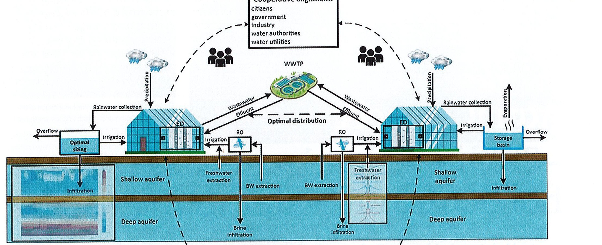
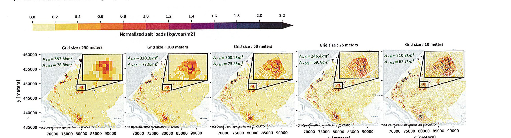
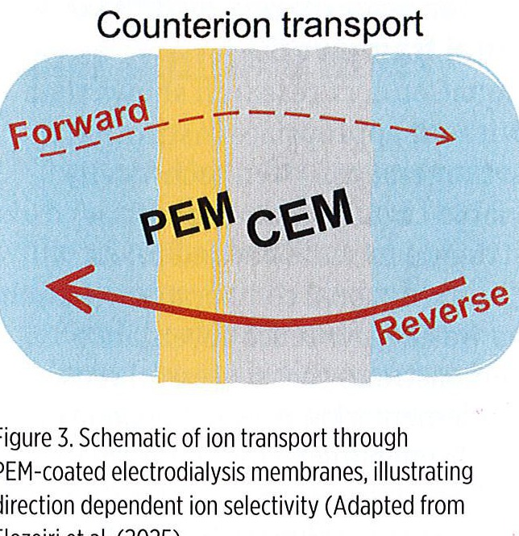
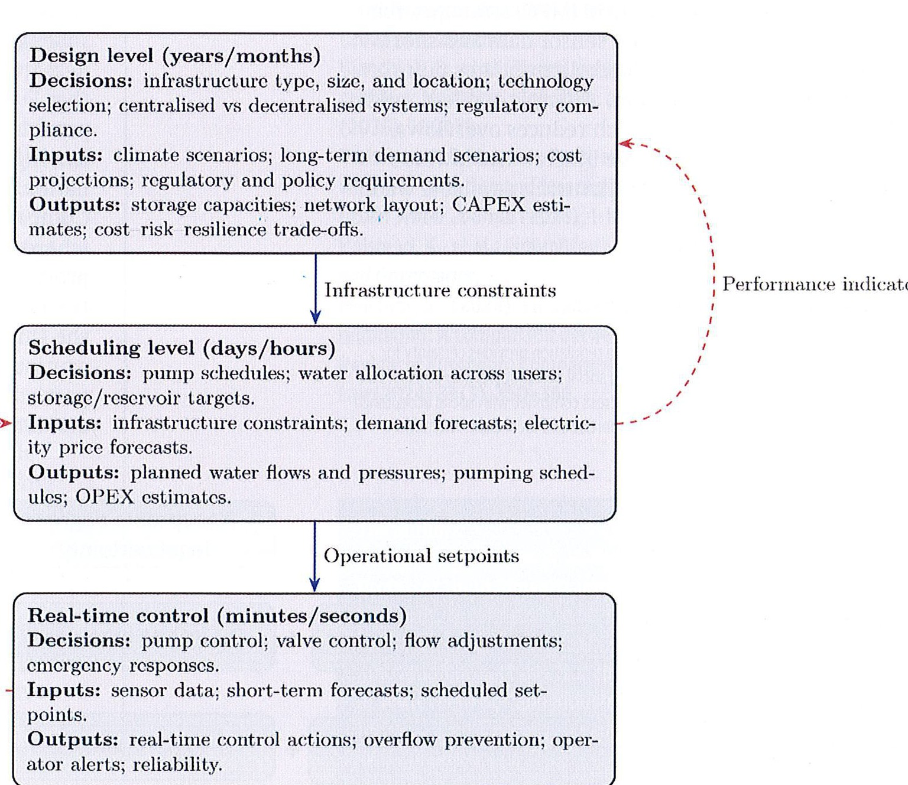
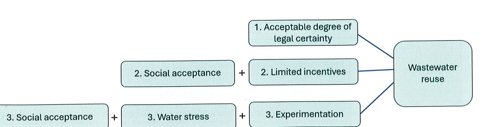

中文完整摘要說明
本文介紹荷蘭溫室園藝面臨的水資源壓力，以及 AquaConnect 計畫如何把雨水、地下水、淡鹹水處理、廢水回收與地表/地下儲水整合成一套區域水共享系統。文章指出，循環用水不能只靠單一技術，還必須同時管理地下水鹽化風險、水質與養分累積、跨尺度儲水與網路調度，以及治理與法規安排。多項荷蘭研究案例顯示，精細地下水模型、選擇性電滲析膜、儲水網路最佳化與參與式治理工具，可以協助園藝產業減少對外部淡水的依賴，並在氣候變遷、乾旱與用水競爭加劇下建立更具韌性的水管理模式。
中文全文
荷蘭南荷蘭地區的溫室園藝是高度集約的農業系統，生產蔬菜、花卉與觀賞植物供應全球市場，因此需要穩定且品質良好的灌溉用水。過去，溫室多仰賴屋頂收集雨水並儲存在開放水池中，乾旱時再以地下水抽取補充。然而，儲水池容量有限、地下水抽取增加、地層下陷與鹽化風險上升，使這套做法逐漸承受壓力。同時，城市、工業、自然保育與農業都在同一區域水系中競爭水源，氣候變遷又進一步放大乾旱與水量波動。園藝部門若要維持生產，就需要從線性取水轉向循環、共享且可調度的水管理模式。
AquaConnect 計畫提出的核心構想，是把多種替代水源與儲水選項整合進一個協調系統。這個系統包括雨水收集、淡水與鹹水地下水的抽取與處理、廢水再生利用、地表儲水與地下儲水。要讓這種區域性水共享模式真正運作，文章歸納出四個支柱：第一，管理地下水與儲水系統；第二，確保水質與水量可用性；第三，最佳化儲水系統設計、監測與調度；第四，建立治理、法律與合作框架。
在地下水管理方面，過度抽取地下水可能引發鹽水上湧，使鹽分進入淺層淡水含水層與水井，造成灌溉水鹽度升高並危害作物。Utrecht University 的 Thijs Hendrix 使用三維變密度地下水流與鹽分傳輸模型，模擬地下抽水如何影響含水層中的淡鹹水界面。研究顯示，抽水深度與抽水量會改變淡水下滲與鹽水上湧的型態，進而可用來找出較安全的抽水門檻，降低淺層淡水含水層鹽化風險。另一項由 Ignacio Farias 進行的研究比較不同網格解析度對鹽水上湧預測的影響，指出較細緻的模型解析度能捕捉淡水透鏡形成與局部鹽水入侵特徵，這對設計共享地下水系統的安全抽取策略相當重要。
水質也是循環園藝的關鍵問題。溫室會多次重複使用灌溉水以節省資源，但隨時間累積，鈉離子等有害離子會逐漸升高，抑制作物生長。若要延長水的再利用次數，就必須在移除有害離子的同時保留植物所需養分。Wageningen University 的 Alaaeldin Elozeiri 研究以聚電解質多層膜塗佈的電滲析膜，藉由調控離子傳輸，選擇性阻擋二價離子並允許單價離子通過。實驗顯示，離子移動方向會影響選擇性，若方向相反，效果會變弱。這些結果可用來設計更有效的膜技術，協助移除抑制作物生長的離子，並保留有益養分，讓溫室灌溉水循環更穩定。
在區域尺度建立水共享系統，還需要解決網路效率與儲水配置問題。共享系統牽涉許多行動者、不同用水需求、不確定的供水量，以及與能源系統的互動，因此決策需要數學最佳化支援。文章把決策分成三個層級：長期設計層級決定儲水、水管與處理設施的規模與位置；排程層級決定每日或逐日的水流、抽水與分配方式；即時控制層級則依據感測資料與預報調整幫浦、閥門與緊急應變。Delft University of Technology 的 Aliereza Shetaei 建立隨機多目標最佳化框架，用於中央水庫、分散式水箱與含水層儲水組成的混合儲水網路。此框架納入降雨、灌溉需求與能源成本的不確定性，讓規劃者可以比較不同氣候情境下的儲水配置。應用於阿姆斯特丹植物園案例時，乾旱年份的水系統效率在風險中立情境下提升 16%，在風險趨避情境下提升 29%。
最後，技術方案必須搭配治理與法律安排。區域水共享需要農民、供水公司、地方政府、監管機關與其他用水者共同協調，釐清誰能取用何種水源、誰負責儲存與處理、成本如何分攤、風險與責任如何分配。文章強調，若要讓循環園藝水管理可持續，必須把模型、膜技術、基礎設施最佳化與治理工具結合起來，並把地方實驗逐步轉化為可擴展的區域制度。這樣的整合方法能減少對外部淡水的依賴，提高乾旱時的調適能力，也為其他面臨水資源壓力的園藝地區提供參考。
圖表與原文表格 / Figures and Tables





Original Full Text
Kirsty Holstead, Alessio Belmondo Bianchi, Thomas Wagner, Huub Rijnaarts, Arjen van
Nieuwenhuijzen and Tiza Spit highlight a
Dutch research programme to improve water
management in the horticultural sector.
reenhouse horticulture is a cornerstone of Dutch agriculture. In South Holland thousands of hectares of greenhouses produce vegetables, flowers, and ornamentals for global markets, requiring large volumes of high-quality irrigation water.
Traditionally growers have relied on rainwater collected from greenhouse roofs and stored in open basins, supplemented by groundwater abstraction during dry periods. But this system is increasingly under pressure. Limited basin capacity, combined with rising groundwater abstraction, contributes to land subsidence, salinisation and growing dependence on external freshwater sources. At the same time, urban areas, industry and nature conservation compete for water from the same regional system. Climate change further exacerbates these pressures. Under these conditions, the horticultural sector’s traditional water management approach cannot guarantee reliable freshwater availability, making a transition unavoidable. AquaConnect is a transdisciplinary Dutch scientific and applied research programme that aims to contribute to a paradigm shift in freshwater provision in the Netherlands from ‘discharging precipitation surplus through the rivers to the sea as quickly as possible’ to ‘storing and reusing water for regional self-sufficient water provision’ (www.aquaconnect.nu). As part of the AquaConnect project, researchers, growers, water companies and public authorities explored alternatives to conventional freshwater supply for Dutch greenhouse horticulture. These discussions highlighted the potential
of water storage, sharing and subsurface buffering to build a more resilient circular water system.
The dynamic water sharing model emerged from these explorations as a vision for a circular and resilient water system (see Figure 1), which integrates innovative physical, digital and institutional components. This concept brings together multiple alternative water sources and storage options into one coordinated system: rainwater harvesting, brackish and fresh groundwater extraction and treatment, wastewater reclamation, and both surface and subsurface storage. Four interconnected pillars are central to making this model function effectively: 1.
Managing groundwater and storage systems; 2. Ensuring water quality and availability; 3.
Optimised storage system design and monitoring; and 4. Enabling governance and legal frameworks.
Managing groundwater and storage systems
Groundwater extraction can trigger saltwater upconing, drawing saline water upward into shallow freshwater layers and wells, risking irrigation water quality and crop damage. Managing this risk is essential for subsurface storage and recovery systems.
Thijs Hendrikx, Utrecht University, Netherlands, has developed a >
Water sharing mechanism
“igure 1. Conceptual illustration of the dynamic water-sharing model
three-dimensional, variable-density groundwater flow and salt-transport model (3D-VD-FT) to simulate these processes. The model was calibrated using field data from the Freshman-project, an initiative led by the drinking water company Dunea. Hendrikx’s simulations demonstrated how extraction influences the movement of the freshsaltwater interface in the aquifer and revealed distinct patterns of downconing of freshwater and upconing of saline water, depending on pumping depth and rate. These findings allowed researchers to identify maximum safe pumping thresholds, reducing the risk of salinisation of the shallow freshwater aquifer (see Figure 2).
Complementary research by Ignacio Farias, Utrecht University, examined how grid resolution affects predictions of saltwater upconing. By testing spatial resolutions from 10 to 250 metres in a regional
groundwater model of the Delfland area, he found that fine resolution models better captured freshwater lens formation and localised salt intrusions, features that coarser grids missed (see Figure 2). This work highlights the importance of model precision in designing safe extraction strategies for shared subsurface water systems.
Ensuring water quality
Water quality is a central concern in circular horticulture. Greenhouses reuse irrigation water multiple times to conserve resources, but over time sodium ions (Na*) accumulate, hindering plant growth. To extend
HULL CL al. (LULI)
electively removed while reserving essential nutrients. Alaaeldin Elozeiri, Wageningen Jniversity, Netherlands, studied -lectrodialysis membranes coated vith polyelectrolyte multilayers PEMs) that regulate ion transport.
The coatings selectively block livalent ions (Ca”*, Mg?*) while lowing monovalent ions (Na*, K*) to pass, enabling better control of toxic Na* versus nutrient ions. Laboratory
igure 4. Multi-level optimisation framework for a
tests showed that transport is direction dependent. When ions move from the coated side (see Figure 3), divalent ions are hindered and accumulate near the interface, improving selective removal. However, this effect is weaker in the reverse direction. A 1D model explained this by slow ion movement and charge buildup within the PEM, which drives the observed selectivity. Overall, the results inform membrane designs that remove growth inhibiting ions (especially Na*) from irrigation water while retaining beneficial nutrients, supporting more efficient greenhouse water recycling.
Optimising network efficiency and water storage Implementing a water sharing system at a regional scale is inherently complex. It involves multiple actors, uncertain water availability, fluctuating demands and strong interactions with energy systems. As a result, decision-making must be supported by mathematical optimisation. Such decision support can be structured across three interconnected levels (see Figure 4): 1. Design or long-term planning level, where infrastructure such as storage, pipeline and treatment systems is sized and located; 2. Scheduling or short-term planning level, where daily or day-ahead decisions determine how infrastructure is operated; and 3. Realtime control level, where operations are continuously adjusted based on sensor data and forecasts. Researchers have developed optimisation algorithms tailored to
Optimising network efficiency and water storage Implementing a water sharing system at a regional scale is inherently complex. It involves multiple actors, uncertain water availability, fluctuating demands and strong interactions with energy systems. As a result, decision-making must be supported by mathematical optimisation. Such decision support can be structured across three interconnected levels (see Figure 4): 1. Design or long-term planning level, where infrastructure such as storage, pipeline and treatment systems is sized and located; 2. Scheduling or short-term planning level, where daily or day-ahead decisions determine how infrastructure is operated; and 3. Realtime control level, where operations are continuously adjusted based on sensor data and forecasts. Researchers have developed optimisation algorithms tailored to each of these levels to support robust, efficient, and
At the design (long-term planning) level, Alireza Shefaei, Delft University of Technology, Netherlands, developed a stochastic multi-objective optimisation framework for hybrid water storage networks that combine centralised reservoirs, decentralised tanks and aquifer storage. The model accounts for uncertainty in rainfall, irrigation demand and energy costs, enabling planners to test storage configurations across different climate scenarios. Applied to a botanical garden in Amsterdam, Netherlands, it increased water system efficiency by 16% (risk-neutral) and 29% (risk-averse) during dry years. The framework can be extended to greenhouse regions such as Westland, in the Netherlands, to assess how shared storage and aquifers can buffer water availability and enhance regional climate resilience.
At the short-term scheduling level, Alessio Belmondo Bianchi, Wageningen University, developed day-ahead optimisation algorithms that model water pumps as flexible energy assets. These methods combine convex optimisation, learning-based approximations and electricity price forecasts to shift pumping to periods with low electricity prices or high renewable energy availability. Within a water-sharing system, this approach can be adapted to coordinate pumping across multiple users and shared storage facilities, enabling fair and cost-efficient water allocation while minimising collective energy costs and emissions.
At the real-time control level, Peter Verheijen, Eindhoven University of Technology, Netherlands, designed model predictive control (MPC) strategies for regional water networks. Using sensor data and shortterm weather forecasts, the controller updates pump operations every 10-15 minutes, anticipating demand up to 24 hours ahead. This approach reduces overflows, limits the need for large storage buffers and lowers electricity consumption while ensuring a reliable water supply for greenhouses.
Figure 5; Summarises three governance pathways identified in successful reuse cases (Holstead et al.. [7]). In the first, clear and stable regulation provides certainty for
Water governance and
legal frameworks
AquaConnect research shows that without appropriate institutional arrangements, even technically viable circular water solutions struggle to scale beyond pilots.
International comparative research on wastewater reuse governance demonstrates that successful reuse implementation does not depend on a single enabling factor, nor is there a universal governance model. Contrary to common assumptions, neither acute water scarcity nor strong financial incentives alone are necessary or sufficient conditions for success. Instead, implementation is shaped by governance pathways, specific combinations of regulatory clarity, social acceptability, perceived water stress and innovation capacity that work together in a given context (see Figure 5).
These findings are directly relevant to the Dutch greenhouse sector. The Netherlands has advanced technical knowledge and pilot experience in reuse and subsurface storage, but governance conditions for regional-scale water sharing remain fragmented. Research by Melchers (2024) shows that European wastewater directives provide only a harmonised baseline, leaving significant discretion to national and regional authorities. Compared with Spain and Malta, where standards, permitting procedures and allocation rules for treated effluent are clearly defined, the Dutch framework remains
eammwiteawaen mann Tacecaaealiait
66 Greenhouses reuse irrigation water multiple times
Together, these findings resonate with AquaConnect’s findings that while technical solutions and pilots -xist, scaling them requires building 1 general, hospitable institutional environment, including trust and egitimacy among society, growers, itilities and regulators. To create ‘avourable conditions for dynamic water sharing, examples of smallscale practical circular water systems need to be demonstrated, supported by intensive monitoring of water quality parameters set by ‘egulators and water specialists, and he direct involvement and supervision of permitting 1uthorities, with a clear institutional nodel for scaling up.
The AquaConnect programme lemonstrates how interdisciplinary ‘esearch can transform water nanagement in the Dutch 1orticultural sector. Through lynamic water sharing, greenhouses night collectively access alternative ources, such as rainwater, treated ffluent and brackish groundwater, vhile reducing reliance on reshwater extraction.
AquaConnect research indicates hat: 1. 3D groundwater modelling ‘an safeguard against salinisation ind define safe extraction limits; 2. elective ion-removal membranes ‘an Maintain irrigation quality with ower energy use; 3. Stochastic yptimisation can design efficient 1ybrid storage systems under incertainty; 4. Predictive and
connected network that stores, treats and distributes water across the horticultural landscape. However, technical feasibility will not translate into regional implementation unless institutional structures evolve in parallel. A coordinating institution to manage access, responsibilities and safeguards will need to be designed and tested. Dutch water governance was built for abundant rainfall and flood control, not for drought and competition over freshwater. Progress, therefore, requires not only new rules but also new relationships and coordination among growers, utilities, regulators and wider society. Building on AquaConnect, follow-on initiatives such as STURDI-Water (NWO) and Circular Water Governance (I4CS-EWUU) provide opportunities to develop and trial such arrangements at scale. ®
Further reading:
Hendrikx, T.L., et al.; Optimising scavenger well strategies under parameter uncertainty to maximise allowable freshwater pumping rates in a coastal aquifer, The Netherlands. Journal of Hydrology (2025) https://doi.org/10.1016/j.jhydrol.2025.134554.
Farias, I. et al.; Effects of grid resolution on regional modelled groundwater salinity and salt fluxes to surface water. Journal of Hydrology (2024), 643, 131915.
Elozeiri, A. A., et al.; Current direction regulates ion transport across layer-by-layer one-side-coated ion-exchange membranes in electrodialysis. ACS Applied Materials & Interfaces (2025) 17(14), 22004-22013.
Shefaei, A., et al.; Optimising rainwater harvesting systems under uncertainty: A multi-objective stochastic approach with risk considerations. Resources, Conservation & Recycling Advances (2025) 26, 200254.
Bianchi, A. B., et al.; Neural network-informed optimal water flow